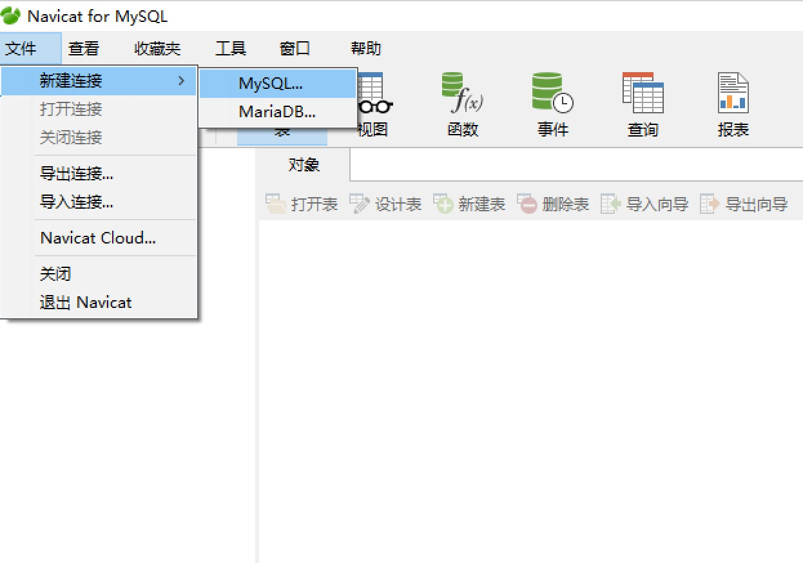

服务器端
一、卸载与安装
注意：当前使用的ubuntu镜像中已经安装好了mysql服务器端，无需再安装，并且设置成了开机自启动。
1. 卸载系统预装的旧版本MySQL
终端下输入：
python@ubuntu:~$ sudo apt-get remove mysql-server
2. 更新源服务器软件列表
python@ubuntu:~$ sudo apt-get update
3. 重新启动终端，安装MySQL
python@ubuntu:~$ sudo apt-get install mysql-server
4. Ubuntu开启、关闭、重启MySQL服务
# 使用Ubuntu Service来控制
python@ubuntu:~$ sudo service mysql start
python@ubuntu:~$ sudo service mysql stop
python@ubuntu:~$ sudo service mysql restart
或
# 使用MySQL mysqld脚本控制
python@ubuntu:~$ sudo /etc/init.d/mysql start
python@ubuntu:~$ sudo /etc/init.d/mysql stop
python@ubuntu:~$ sudo /etc/init.d/mysql restart
系统默认开机启动MySQL， 服务器端一般以服务方式管理，注意服务名称为mysql
5. 配置文件
- 默认配置文件：
/etc/mysql/mysql.conf.d/mysqld.cnf - bind-address表示服务器绑定的ip，通过此ip连接服务器，可以配置成其它ip或者不配置，默认是127.0.0.1
- port表示端口，默认为3306
- datadir表示数据库目录，配置为/var/lib/mysql
- log_error表示错误日志，配置为/var/log/mysql/error.log
客户端
客户端为开发人员与dba使用，通过socket方式与服务端通信，常用的有Navicat图形界面工具、命令行mysql
一、图形化界面客户端 Navicat for MySQL
1。 解压 Navicat 的tar包到 /opt/ 目录下
# -C 指定解包目录
python@ubuntu:~$ sudo tar xvf avicat112_mysql_cs_x64.tar -C /opt/
2. 启动软件
# 执行目录下的启动文件
python@ubuntu:~$ /opt/navicat112_mysql_cs_x64/start_navicat
3. 每次执行都需要进入目录非常不方便，我们可以配置环境变量
# 使用文本编辑器，打开当前用户环境变量配置文件 .bashrc
python@ubuntu:~$ sudo gedit ~/.bashrc
# .bashrc 内
# 添加下列语句，将navicat环境变量添加到 .bashrc 里
export PATH=$PATH:/opt/navicat112_mysql_cs_x64/
# 添加下列语句，给快捷方式起别名 navicat，方便启动
alias navicat="start_navicat"
4. 保存文本，在终端执行 source 命令让环境变量生效：
python@ubuntu:~$ source ~/.bashrc
5. 重新启动终端，在任意目录下执行命令即可启动：
python@ubuntu:~$ navicat
6. Linux下问题：
一、中文乱码问题： 打开start_navicat文件，
sudo gedit /opt/navicat112_mysql_cs_x64/start_navicat，将export LANG="en_US.UTF-8改为export LANG="zh_CN.UTF-8二、试用期问题： 删除 用户目录 下的.navicat64目录，试用期将重新计时：
sudo rm -rf ~/.navicat64
7. 正常启动成功如下图
二、命令行客户端 MySQL
当前使用的ubuntu镜像中已经安装好了mysql命令行客户端，无需再安装。
1. 在终端运行如下命令安装 mysql客户端
python@ubuntu:~$ sudo apt-get install mysql-client
2. 详细连接的命令可以查看帮助文档
python@ubuntu:~$ mysql --help
3. 常用连接命令如下，输入后回车
# -u 指定登录的用户名，-p 指定登录密码，注意没有空格
python@ubuntu:~$ mysql -uroot -pmysql
4. 连接成功后提示如下图

5. 按ctrl+d或输入如下命令退出
exit
# 或者 quit
开启MySQL root用户远程登录权限
# 登录MySQL root用户
python@ubuntu:~$ mysql -uroot -pmysql
# 1. 查看所有数据库名称
mysql> show databases;
+--------------------+
| Database |
+--------------------+
| information_schema |
| mysql |
| performance_schema |
| sys |
+--------------------+
4 rows in set (0.00 sec)
# 2. 切换到 mysql 数据库
mysql> use mysql;
Database changed
# 3. 查看当前数据库所有的表
mysql> show tables;
...
| time_zone_name |
| time_zone_transition |
| time_zone_transition_type |
| user |
+---------------------------+
31 rows in set (0.00 sec)
# 4. 查看 root 用户的 host，默认只能被本机IP(127.0.0.1)登录
mysql> select host, user from user where user='root';
+-----------+------+
| host | user |
+-----------+------+
| localhost | root |
+-----------+------+
1 row in set (0.00 sec)
# 5. % 表示任意IP，语句表示更新root用户信息，让root用户可以被任意主机IP登录
mysql> update mysql.user set host = '%' where user = 'root';
+------+------+
| host | user |
+------+------+
| % | root |
+------+------+
1 row in set (0.00 sec)
# 6. 使修改生效
mysql> flush privileges;
# 7. 其他主机即可远程登录到本机MySQL root用户, -h 表示远程登录的目标主机ip
python@ubuntu:~$ mysql -uroot -pmysql -h 192.168.xx.xxx
在Windows的Navicat for MySQL上远程连接Ubuntu里的MySQL
打开软件，依次点击 文件 - 新建连接 - MySQL

在弹出的对话框里，输入任意连接名，输入需要远程连接的Ubuntu主机IP，端口号默认3306，默认用户名为root，默认密码输入mysql
双击「Ubuntu」或右击打开连接，即可远程登录Ubuntu MySQL
MySQL 5.7 默认的四个数据库简介（了解）
1、 INFORMATION_SCHEMA：提供了访问数据库元数据的方式。
- 元数据是关于数据的数据，如数据库名、表名、列的数据类型或访问权限等。有些时候用于表述该信息的其他术语包括“数据词典”和“系统目录”。你可以将INFORMATION_SCHEMA看成一个信息数据库，其中保存着关于MySQL服务器所维护的所有其他数据库的信息。在INFORMATION_SCHEMA中，有数个只读表。它们实际上是视图，而不是基本表，因此你将无法看到与之相关的任何文件。每位MySQL用户均有权访问这些表，但仅限于表中的特定行，在这类行中含有用户具有恰当访问权限的对象。
2、 PERFORMANCE_SCHEMA：主要用于收集数据库服务器性能参数。MySQL用户是不能创建存储引擎为PERFORMANCE_SCHEMA的表。
- performance_schema提供以下功能：提供进程等待的详细信息，包括锁、互斥变量、文件信息；保存历史的事件汇总信息，为提供MySQL服务器性能做出详细的判断；对于新增和删除监控事件点都非常容易，并可以随意改变mysql服务器的监控周期，例如（CYCLE、MICROSECOND）。通过以上得到的信息，DBA能够较明细得了解性能降低可能是由于哪些瓶颈。
3、mysql：这个是mysql的核心数据库
- 主要负责存储数据库的用户、权限设置、关键字等mysql自己需要使用的控制和管理信息。不可以删除。如果对mysql不是很了解，也不要轻易修改这个数据库里面的表信息。
4、sys (MySQL5.7新增)
- MySQL系统数据库，通过这个库可以快速的了解系统的元数据信息，是通过视图的形式把information_schema 和performance_schema结合起来，查询出更加令人容易理解的数据，存储过程可以可以执行一些性能方面的配置，也可以得到一些性能诊断报告内容。